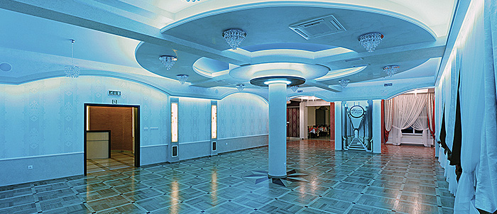
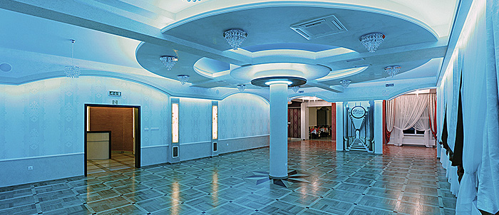

Aktualności

Wyróżnienie
Szanowni Państwo mamy przyjemność poinformować, że ZAJAZD NA WZGÓRZU stał się laureatem w plebiscycie "Orły branży ślubnej" w powiecie gorlickim. Jest nam niezmiernie miło bo to właśnie dzięki Wam- naszym gościom, możemy pochwalić się takim wyróżnieniem.


Informacja
Uprzejmie informujemy , że od 1 marca bieżącego roku nastąpią zmiany godzin otwarcia Restauracji:
Poniedziałek - nieczynne
Wtorek 11:00-22:00
Środa 11:00-22:00
Czwartek 11:00-22:00
Piątek 11:00-22:00
Sobota 11:00-22:00
Niedziela 11:00-22:00
Przerwa Świąteczna
Sylwester
Otwarcie

Informacja
Szanowni Klienci. Informujemy, że Restauracja w miesiącu wrześniu będzie nieczynna w następujące dni:
01-02.09 (sobota, niedziela)
08-09.09 (sobota, niedziela)
15-16.09 (sobota, niedziela)
Za utrudnienia przepraszamy. Wkrótce otwarcie nowej części restauracyjnej
Głosowanie


Informacja
Szanowni Klienci. Informujemy, że Restauracja w miesiącu sierpniu będzie nieczynna w następujące dni:
04-05.08 (sobota, niedziela)
11-12.08 (sobota, niedziela)
18-19.08 (sobota, niedziela)
25-26.08 (sobota, niedziela)
Za utrudnienia przepraszamy. Wkrótce otwarcie nowej części restauracyjnej
Informacja
Szanowni Klienci. Informujemy, że Restauracja w miesiącu lipcu będzie nieczynna w następujące dni:
07-08.07 (sobota, niedziela)
14.07 (sobota)
21-22.07 (sobota, niedziela)
28.07 (sobota)
Za utrudnienia przepraszamy. Wkrótce otwarcie nowej części restauracyjnej
Aktualizacja
Szanowni Klienci. Informujemy, że Restauracja w miesiącu czerwcu będzie nieczynna w następujące dni:
02-03.06 (Sobota, Niedziela)
09-10.06 (Sobota, Niedziela)
16-17.06 (Sobota, Niedziela)
23-24.06 (Sobota, Niedziela)
30.06 (Sobota)
Za utrudnienia przepraszamy. Wkrótce otwarcie nowej części restauracyjnej
Informacja
Szanowni Klienci. Informujemy, że Restauracja w miesiącu maju będzie nieczynna w następujące dni:
1.05 (Wtorek)
3.05 (Czwartek)
5-6.05 (Sobota, Niedziela)
12-13.05 (sobota, niedziela)
19-20.05 (sobota, niedziela)
26.05 (sobota)
31.05 (czwartek)
Za utrudnienia przepraszamy.
Informacja
Szanowni Klienci. Informujemy, że Restauracja w miesiącu kwietniu będzie nieczynna w następujące dni:
1-2.04 (przerwa świąteczna)
7.04 (Sobota)
14.04 (Sobota)
21-22.04 (Sobota, Niedziela)
28-29.04 (Sobota, Niedziela)
Za utrudnienia przepraszamy.
Informacja
Szanowni Klienci. Informujemy, że Restauracja w miesiącu styczniu będzie nieczynna w następujące dni:
06.01 (Sobota)
Za utrudnienia przepraszamy.
Bal Sylwestrowy

Informacja
Szanowni Klienci. Informujemy, że Restauracja w miesiącu grudniu będzie nieczynna w następujące dni:
23-26.12 (przerwa świąteczna)
31.12 (Sobota)
W dniu 15.12(piątek) Restauracja czynna do 16:00
Za utrudnienia przepraszamy.
Informacja
Szanowni Klienci. Informujemy, że Restauracja w miesiącu listopadzie będzie nieczynna w następujące dni:
01.11 (Środa)
4.11 (Sobota)
11-12.11 (Sobota, Niedziela)
18-19.1 (Sobota, Niedziela)
25-26.11 (Sobota, Niedziela)
Za utrudnienia przepraszamy.
Promocje

Informacja
Szanowni Klienci. Informujemy, że Restauracja w miesiącu październiku będzie nieczynna w następujące dni:
07-08.10 (Sobota, Niedziela)
12.10 (Czwartek)
14-15.10 (Sobota, Niedziela)
21-22.10 (Sobota, Niedziela)
28-29.10 (Sobota, Niedziela)
Za utrudnienia przepraszamy.
Aktualizacja
Szanowni Klienci. Informujemy, że Restauracja w miesiącu wrześniu będzie nieczynna w następujące dni:
02-03.09 (Sobota, Niedziela)
09-10.09 (Sobota, Niedziela)
16-17.09 (Sobota, Niedziela)
23-24.09 (Sobota, Niedziela)
30.09 (Sobota)
Za utrudnienia przepraszamy.
Informacja
Szanowni Klienci. Informujemy, że Restauracja w miesiącu sierpniu będzie nieczynna w następujące dni:
05-06.08 (Sobota, Niedziela)
12-13.08 (Sobota, Niedziela)
15.08 (Wtorek)
19-20.08 (Sobota, Niedziela)
26-27.08 (Sobota, Niedziela)
Za utrudnienia przepraszamy.
Aktualizacja
Szanowni Klienci. Informujemy, że Restauracja w miesiącu lipcu będzie nieczynna w następujące dni:
01-02.07 (Sobota, Niedziela)
08-09.07 (Sobota, Niedziela)
15-16.07 (Sobota, Niedziela)
20.07 (Czwartek)
22.07 (Sobota)
29-30.07 (Sobota, Niedziela)
Za utrudnienia przepraszamy.
Informacja
Szanowni Klienci. Informujemy, że Restauracja w miesiącu czerwcu będzie nieczynna w następujące dni:
03.06 (Sobota)
10.06 (Sobota)
15.06 (Czwartek - Boże Ciało)
24.06 (Sobota)
Za utrudnienia przepraszamy.
Aktualizacja
Szanowni Klienci. Informujemy, że Restauracja w miesiącu maju będzie nieczynna w następujące dni:
03.05 (Środa)
06-07.05 (Sobota, Niedziela)
13-14.05 (Sobota, Niedziela)
20-21.05 (Sobota, Niedziela )
27.05 (Sobota, Niedziela )
Za utrudnienia przepraszamy.
Aktualizacja
Szanowni Klienci. Informujemy, że Restauracja w miesiącu kwietniu będzie nieczynna w następujące dni:
14,15,16,17.04 (przerwa świąteczna)
23.04 (Niedziela)
14-15.04 (Sobota, Niedziela)
Za utrudnienia przepraszamy.
Informacja
Szanowni Klienci. Informujemy, że Restauracja w miesiącu lutym będzie nieczynna w następujące dni:
4-5.02 (Sobota, Niedziela)
18.02 (Sobota)
25-26.02 (Sobota, Niedziela)
Za utrudnienia przepraszamy.
Aktualizacja
Szanowni Klienci. Informujemy, że Restauracja w miesiącu styczniu będzie nieczynna w następujące dni:
1.01 (Niedziela)
7.01 (Sobota)
14-15.01 (Sobota, Niedziela)
28.01 (Sobota)
Za utrudnienia przepraszamy.
Aktualizacja
Szanowni Klienci. Informujemy, że Restauracja w miesiącu grudniu będzie nieczynna w następujące dni:
24-25-26.12 (Sobota, Niedziela, Poniedziałek)
31.12 (Sobota)
Za utrudnienia przepraszamy.
Aktualizacja
Szanowni Klienci. Informujemy, że Restauracja w miesiącu listopadzie będzie nieczynna w następujące dni:
1.11 (Wtorek)
5.11 (Sobota)
12.11 (Sobota)
26.11 (Sobota)
Za utrudnienia przepraszamy.
Ogłoszenie
Szanowni Klienci. Informujemy, że Restauracja w miesiącu październiku będzie nieczynna w następujące dni:
1.10 (Sobota)
8-9.10 (Sobota, Niedziela)
15-16.10 (Sobota, Niedziela)
22-23.10 (Sobota, Niedziela)
29-30.10 (Sobota, Niedziela)
Za utrudnienia przepraszamy.
Ogłoszenie
Szanowni Klienci. Informujemy, że Restauracja w miesiącu wrześniu będzie nieczynna w następujące dni:
3-4.09 (Sobota, Niedziela)
10.09 (Sobota)
17-18.09 (Sobota, Niedziela)
24-25.09 (Sobota, Niedziela)
30.09 (Piątek)
Za utrudnienia przepraszamy.
Aktualizacja
Szanowni Klienci. Informujemy, że Restauracja w miesiącu sierpniu będzie nieczynna w następujące dni:
6-7.08 (Sobota, Niedziela)
13.08 (Sobota)
20-21.08 (Sobota, Niedziela)
27-28.08 (Sobota, Niedziela)
Za utrudnienia przepraszamy.
Informacja
Szanowni Klienci. Informujemy, że Restauracja w miesiącu lipcu będzie nieczynna w następujące dni:
2.07 (Sobota)
9-10.07 (Sobota, Niedziela)
16-17.07 (Sobota, Niedziela)
23.07 (Sobota)
30.07 (Sobota)
Za utrudnienia przepraszamy.
Informacja
Szanowni Klienci. Informujemy, że Restauracja w miesiącu czerwcu będzie nieczynna w następujące dni:
4.06 (Sobota)
11.06 (Sobota)
18-19.06 (Sobota, Niedziela)
25-26.06 (Sobota, Niedziela)
Za utrudnienia przepraszamy.
Ogłoszenie
Szanowni Klienci. Informujemy, że Restauracja w miesiącu maju będzie nieczynna w następujące dni:
1.05 (Niedziela)
3.05 (Wtorek)
7-8.05 (Sobota, Niedziela)
14-15.05 (Sobota, Niedziela)
21.05 (Sobota)
26.05 (Czwartek)
28-29.05 (Sobota, Niedziela)
Za utrudnienia przepraszamy.
Aktualizacja
Szanowni Klienci. Informujemy, że w miesiącu kwietniu restauracja będzie nieczynna w następujące dni:
02.04 (Sobota)
09.04 (Sobota)
16-17.04 (Sobota, Niedziela)
23.04 (Sobota)
30.04 (Sobota)
Za utrudnienia przepraszamy.
Ogłoszenie
Szanowni Klienci. Informujemy, że restauracja w miesiącu lutym będzie nieczynna w następujące dni:
6-7.02 (Sobota, Niedziela)
Za utrudnienia przepraszamy.
Informacja
Szanowni Klienci! Informujemy, że w miesiącu styczniu restauracja będzie nieczynna w następujące dni:
16.01 (sobota)
30.01 (sobota)
Ogłoszenie
Szanowni Klienci. Informujemy, że restauracja w miesiącu grudniu będzie nieczynna w następujące dni:
19.12 Sobota
24-26.12 Przerwa Świąteczna
31.12 Czwartek - Sylwester
Impreza sylwestrowa 2016

Impreza andrzejkowa

Informacja
Szanowni Klienci! Informujemy, że w miesiącu październiku restauracja będzie nieczynna w następujące dni:
03 i 04.10 (sobota, niedziela)
10.10 (sobota)
14.10 (środa)
17.10 (sobota)
24 i 25.10 (sobota, niedziela)
Ważne ogłoszenie
Szanowni Klienci! Informujemy, że w miesiącu sierpniu restauracja będzie nieczynna w następujące dni:
1.08 (sobota)
08 i 09.08 (sobota, niedziela)
15.08 (sobota)
22.08 (sobota)
29.08 (sobota)
Ważna informacja
Szanowni Klienci! Informujemy, że w miesiącu lipcu restauracja będzie nieczynna w następujące dni:
4.07 (sobota)
10,11,12.07 (piątek, sobota, niedziela)
18,19.07 (sobota, niedziela)
25,26.07 (sobota, niedziela)
Ogłoszenie
Szanowni Państwo informujemy, że w miesiącu czerwcu restauracja będzie nieczynna w następujace dni:
4.06 Czwartek
6.06 Sobota
13.06 Sobota
20.06 Sobota
27.06 Sobota
Informacja
W dniach 24 - 28 Grudnia 2014r. restauacja będzie nieczynna z powodu przerwy świątecznej oraz rezerwacji.
Impreza sylwestrowa

Nowe ogłoszenie
Zapraszamy na gimnastykę grupową prowadzoną przez mgr fizjoterapii Joannę Brataniec-Kuna która odbywa się w każdy poniedziałek i czwartek o godz. 18:00. Zapisy pod numerem telefonu 508 393 803
Panorama Sali
Przedstawiamy Państwu Naszą sale weselną na panoramie 360° - kliknij aby zobaczyć.
Ponadto uruchomiliśmy dodatkowy numer telefonu do Zajazdu na Wzgórzu - 18 35 22 548
Otwarcie lokalu
Zajazd na Wzgórzu otwarty jest codziennie od 11:00 do 22:00, zapraszamy. Polecamy danie dnia w cenie 11,99zł + deser gratis.
Zobacz zdjęcia z otwarcia w Galerii.
Wolne terminy
Oferujemy rezerwacje terminów, wolne daty można sprawdzić w zakładce kalendarz.